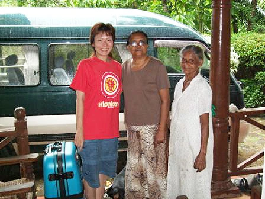
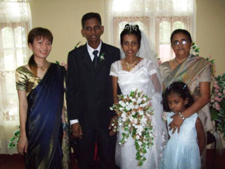
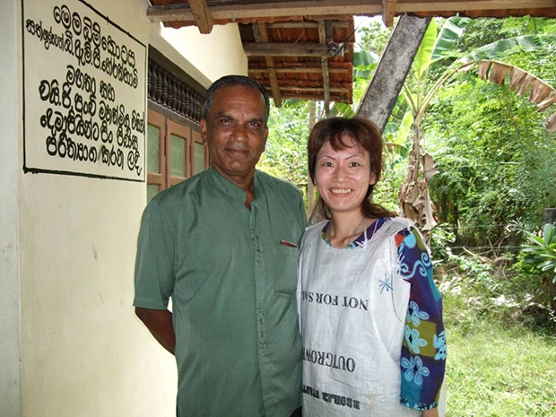
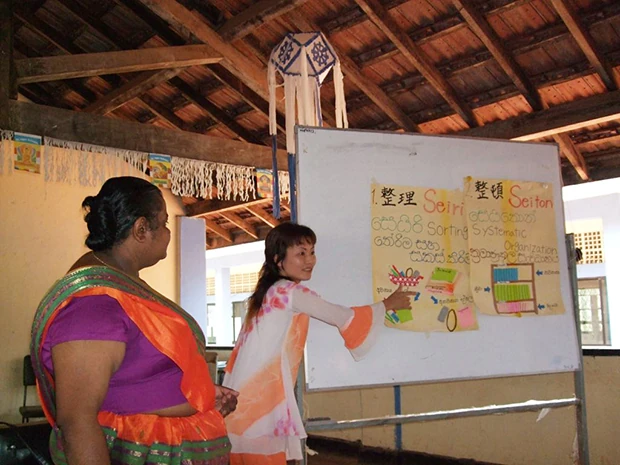

2008年4月～2008年7月まで、プログラムに参加させていただきました。
私の場合、過去に2回のスリランカ旅行経験があります。
2回とも1人旅でして初回渡航時は、シギリヤ、アヌラーダプラ、キャンディ、ポロンナルワなど遺跡地区を、2度目の渡航の時はニゴンボからマータラを電車とスリーウィーラーを使って全ての街を完全制覇して、スリランカが大好きになってしまい、どうしても普通のスリランカの方々の普通の生活を体験したくて参加させていただきました。

ジャヤワルダナさん夫妻のお宅にホームステイさせていただきました。
お父さんは元海軍のでボイラーエンジニアの社長さん、お母さんは元国家公務員で私の英語の先生をやっていただきました。
家族はお父さんとお母さん、愛犬のポッデーの3人(?)家族です。
一日の生活は、私の場合、朝8：00に起床、9:00～12：30までレッスン、その後昼ごはんを食べて15:30～17:30まで再びレッスン、夜はお母さんとお父さんの会社の従業員であるブナパーラとテレビを見て、愛犬ポッデーと一緒に寝るという感じでした。
トラベル英会話しか話せない私でしたが、お母さん(先生)は一生懸命教えてくれました。
テキストだけでなく、新聞を使ったレッスン、DVDを使ったレッスン、お母さんが持っているグラマーの教科書のレッスンなど、色々な方法のレッスンをしていただけました。
お母さんがお勧めしてくれた『water』というインドのヴィドーの事を題材にしたDVDでは、もう涙涙で、2度見て2度も涙を流しました。
完全ベジタリアンで真面目なお父さんはお仕事が忙しくて家を空けることが多かったのですが、それでもたまにお話すると盛り上がりました。
特に幽霊の話になると最大限に盛り上がりました。
お父さんは非常に真面目な方ですがどこか抜けていて、結婚式の日取りを間違える、忘れ物をして仕事に行ってしまうなど、とってもお茶目な側面を持っており、私はお父さんが大好きで大好きで仕方ありませんでした。
サイババの信者であるお父さんにサイババの集会に連れて行っていただき、非常に非常に貴重な体験が出来ました。1回、お父さんが作ってくれた食事を食べましたよ。
お母さんは、私の先生であるだけでなく私のお母さん。
一生懸命授業をやっていただき、最高に美味しい食事を作っていただきました。
私はお母さんの作る食事が大好きで、辛い物も大好き。
その為、現地の人の味付けのままの食事を頂きました。
お母さん曰く『ミユキは何でも食べるから手の掛からない娘だわ』との事。
特にお母さん手作りのアッチャールに入っているチリが大好きで、チリばっかり食べていたらお母さんから
『胃がおかしくなるよ。スリランカの人でもそんなにチリを食べないわよ』
と止められてしまいました。
お母さんとは、授業以外によく買い物に行き、よく遊びに行きました。
余りにも出掛ける事が多かったので、最後の方は、お母さんと一緒にバスで移動する事が多かったです。

ホームステイプログラムならではの経験としては、サイババの集会、国立病院への訪問、2度の結婚式の参加(1組は国際結婚、1組はステイ先の近所で行ったローカル結婚式)、お父さんのお母さんの7回忌の法事に参加(お経が長くて居眠りしちゃった!!)、お母さんの妹(女医さん)の誕生日には、みんなでヒッカドゥワまで海水浴に行ったり、お父さんの故郷に行ったり、アームズギビングに行ったりです。
私が一番印象深かったのは、中でもサイババの集会と国立病院の慰問です。
お母さんの甥がバイクで事故をしてしまい、コロンボの病院に入院してしまったため、私もお見舞いに。
行ったコロンボの病院は、100人の大部屋…エアコンも無く、手術を受けたくても医師の数が足りなくてなかなか手術がうけられない方も多く、特筆すべきことは、テロの犠牲者の方が余りにも多く入院していらっしゃったことです。
そして私の目の前で、30代と思われるテロ犠牲者の男性が、息を引き取りました。
私は滞在3週間目にして激しく体調を崩し、2度も病院に掛かったのですが(1度目はマーネルさんに、2度目はお父さんに病院に連れて行ってもらった)、こちらは有料の私立病院、至れりつくせりの私立病院と違って、国立病院は、野戦病院みたいでした…。
ホームステイしていると、この国がテロの国だという事を忘れてしまいそうになるのですが国立病院にお見舞いに行き、スリランカの実情を見た感じです。
コロンボでは、公務員やお坊さんのデモ活動も見ました。
あ、そうだ、5月ごろ、ステイ先に5人の警察官の方がやってきたため、ライフルを触らせてもらったりしました。

7月上旬からは、ステイ先を変わり、ボランティア活動に参加させていただきました。
農業経営研修、植林の会議、トラクター研修等、参加させていただきました。
特に印象深いのはトラクター研修です。
私もトラクターを運転したのですが非常に難しかったです。
そして研修に来ていた農民の方が、これまたお茶目な方ばかりで、靴を脱いで椅子に座っていたら、知らない間に靴を隠されてしまい(2日連続)、私が探しているとニヤニヤしながら出してくれたり(笑)。
講師のジャヤシンヤさんもお茶目な方で、知恵の輪を渡してきてやってごらんと言ってきたり、トリックアートの写真やマジックを見せて私を喜ばせてくれました。
トラクター研修をやっていた公民館の横の家にはおばあさんが住んでおり、2日間連続でパパーヤをプレゼントしてもらいました。
低開発村の学校では、毎日学校に行けない子ども達が多く、毎日学校に来させる為に、給食制度を作ったという学校もありました。
私は1度学校で『5S』の指導をしました。
私自身8年間化学技術の仕事をしていたので5Sは知っているのですが、企業の5Sと学校の5Sは意味合いが違うのですが、うまく説明できたかな?
前の留学生さんが作ったパネルを使って5Sを話しました。
また、絵画教室にも参加させていただきました。

お母さんとマーネルさん、そしてディル君と私の4人でモデル農場で一泊し、ウシやブタ、ヤギにも触り、最高のリラックスタイムも貰いました。
私の場合、3回ポヤデーに参加し(ウェッサク・ポソン・エセラ)、特にウェッサクの日は、私が7個の和風ランタンを作りました。
3回ともお寺に参拝しました。フリーフードも頂きました。
いつだったか、娯楽の少ないスリランカ人はどうやってストレスを解消するの？とお母さんに聞いたことがあります。
お母さんは『お寺に行って瞑想して、お坊さんに力を分けてもらうことだよ』と言っていました。
それが実感出来たのは、滞在3ヶ月目です。
スリランカには目上の人に対しては中腰になって頭を下げて合掌し、ハイプリーストには膝をついて頭を下げて合掌するという挨拶をします。
その挨拶をすると、頭を撫でてくれるのですが、その時、ふっと力を分けて頂いた感じになります。
私の場合、エセラポヤデーでお寺に行った時、ハイプリーストに挨拶をして頭を撫でてもらったときに、凄い力を貰った感じになりました。
私は長期滞在でしたので、5月下旬から6月上旬にかけて、南インドのトリバンドラム、コバラム、カニャークマリに一人旅をしました。
コロンボでインドビザを取り、ガイド本も地図も持たず、ホテルは現地に行ってから決めるという少し無謀な旅でしたが、南インドの海の綺麗さは筆舌に尽くしがたかったです。
今回のプログラムで、とても良い経験をしました。」